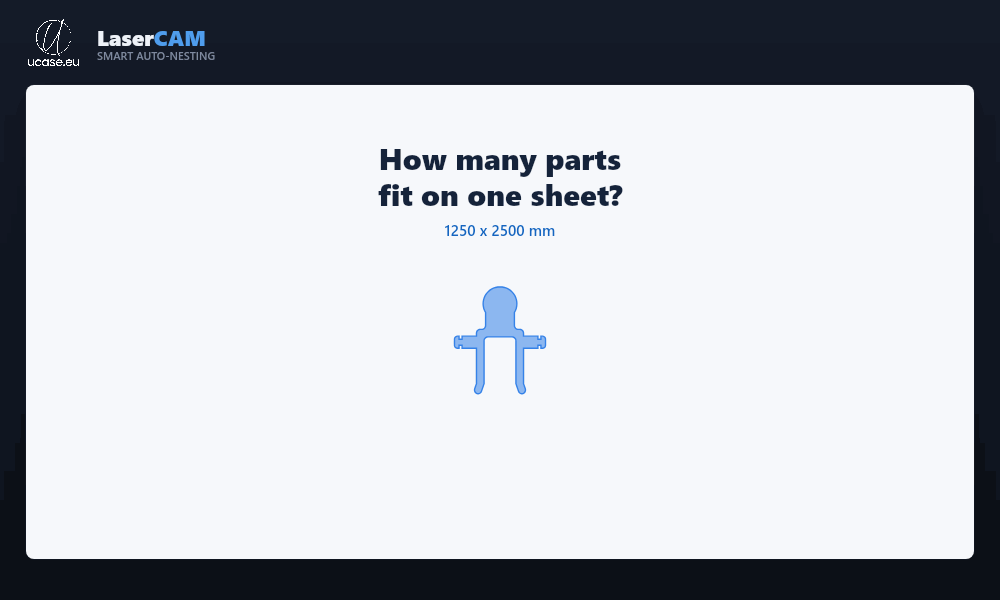
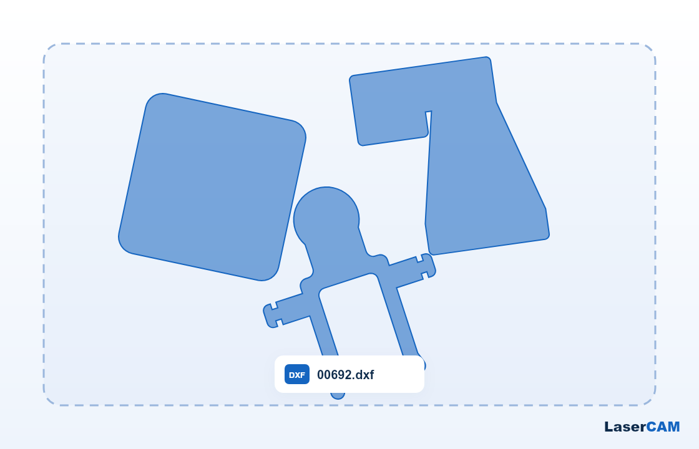
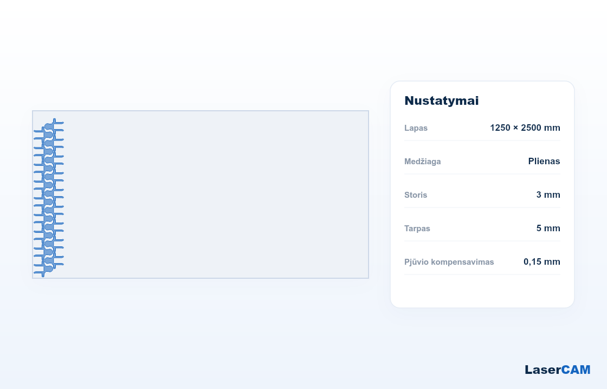
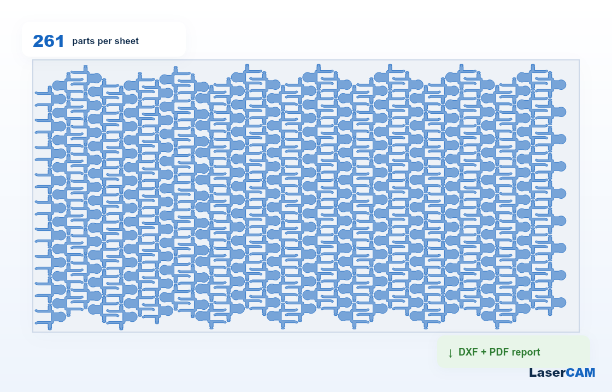

This module adds two actions to any Bill of Materials. Export the BOM to LaserCAM (a free web-based sheet-metal nesting tool), lay out your parts on the raw sheet, then import the result back into Odoo. Component quantities (kg incl. cutting waste), parts-per-sheet and the sheet cutting time are written straight into the BOM — no duplicates, no manual field mapping.
One click on Action → Export to LaserCAM downloads a single ZIP containing everything the nester needs: BOM line ids and quantities, the sheet component, the routing operation and the work-center capacity & cycle time. If a DXF is attached to the product, it travels inside the ZIP too, so the part geometry loads automatically.
Drop the file LaserCAM produces back onto Action → Import from
LaserCAM. The module updates the component quantity, parts-per-sheet and
the sheet cutting time in place. When the BOM has no laser work center yet,
it creates one (Laser <code>) plus its routing operation,
inheriting the cost/hour of your previous work center.
1. Export & upload

2. Nest on the sheet

3. Download & import back

Questions or a version quirk? Email info@ucase.eu.